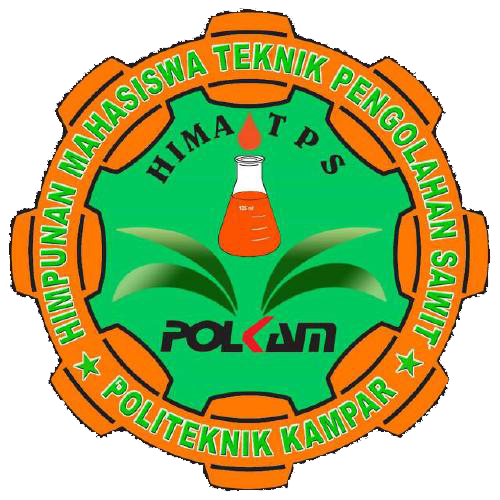
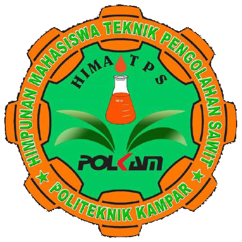

sejarah sawit
Kelapa sawit didatangkan ke Indonesia oleh pemerintah Hindia Belanda pada tahun 1848.
pengertian sawit
Kelapa sawit (Elaeis) adalah tumbuhan industri penting penghasil minyak masak. (biodiesel).
perkembangan sawit
Pada tahun 1911, kelapa sawit mulai diusahakan dan dibudidayakan secara komersial dengan perintisnya di Hindia Belanda adalah Adrien Hallet, seorang Belgia
Buah Sawit
Buah sawit mempunyai warna bervariasi dari hitam, ungu, hingga merah tergantung bibit yang digunakan.
Tandan Sawit
Tandan kosong kelapa sawit adalah salah satu produk sampingan berupa padatan dari industri pengolahan kelapa sawit.
Pelepah Sawit
Pelepah daun pada kelapa sawit yang selama ini kurang dimanfaatkan oleh masyarakat
Minyak Goreng
Setelah dilepas dari tandan, buah kelapa sawit diolah menjadi dua produk utama: Minyak Sawit Mentah (CPO)
kosmetik
Kosmetik adalah zat perawatan yang digunakan untuk meningkatkan penampilan atau aroma tubuh manusia.
Bahan Bakar
Bahan bakar adalah suatu materi apapun yang bisa diubah menjadi energi.
 
